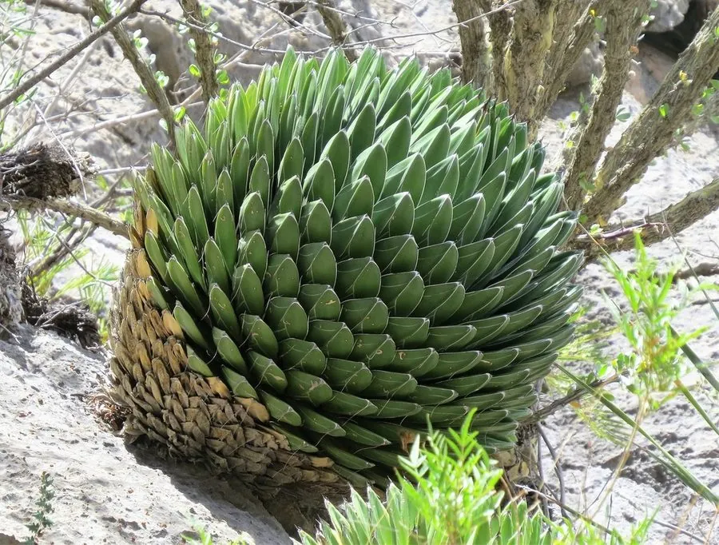

多肉植物 · 植物界
笹之雪 Agave victoriae-reginae

天门冬科龙舌兰属小型多肉，叶片深绿、边缘镶白线，排列成紧凑的几何莲座，原产墨西哥，是龙舌兰中最负盛名的种类。
- 分类
- 门被子植物门纲单子叶植物纲目天门冬目科天门冬科属龙舌兰属
- 栖息环境
- 墨西哥科阿韦拉州干旱山地的石灰岩坡地
- 地理分布
- 原产墨西哥科阿韦拉州，世界各地盆栽观赏
- 保护级别
- 暂无评估；CITES 附录Ⅱ
物种志
笹之雪为天门冬科龙舌兰属的多年生肉质草本，叶片三角状，长 15–25 厘米，深绿色，表面光滑，叶缘有白色角质线，顶端有一枚黑色硬刺。叶片紧密排列成球形或半球形莲座，直径 30–50 厘米，株型规整，几何感极强。花葶高 3–4 米，花黄绿色，花期夏季，开花后母株枯死；果实为蒴果。
笹之雪原产墨西哥科阿韦拉州的干旱山地，喜阳光充足、温暖干燥和通风良好的环境，耐旱、怕积水，不耐严寒。它叶缘白线、株型紧凑，是龙舌兰中最负盛名的观赏种类，被誉为“龙舌兰之王”。栽培用排水良好的颗粒土，生长期干透浇透，冬季保持 5℃ 以上；繁殖以分株和播种为主，生长缓慢，需耐心养护。
形态与习性
- 冠幅莲座直径 30–50 厘米
- 叶片三角状，深绿色，叶缘有白线
- 花期夏季，花葶高 3–4 米
- 光照喜充足阳光
- 水分耐旱，干透浇透
- 土壤排水良好的颗粒土
- 繁殖分株、播种
- 特点株型几何感强，生长缓慢
趣味知识
- 笹之雪的叶缘有白色角质线，叶片排列成规整的几何球形。
- 它被称为“龙舌兰之王”，是龙舌兰属中最著名的观赏种。
- 笹之雪生长缓慢，一株大球往往需要十几年才能养成。